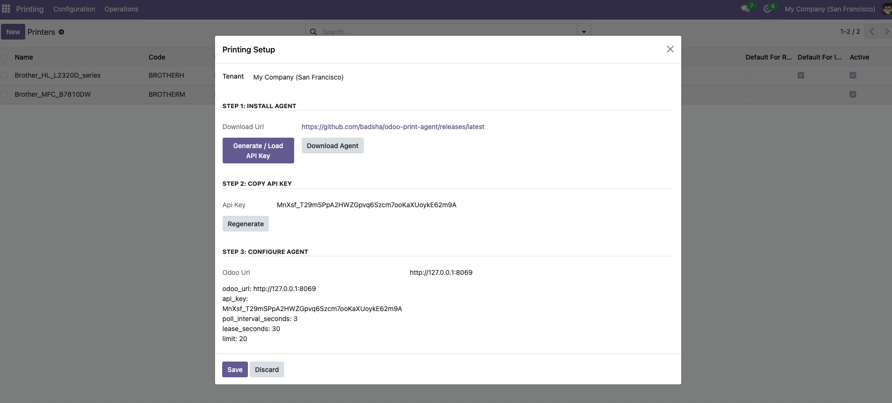
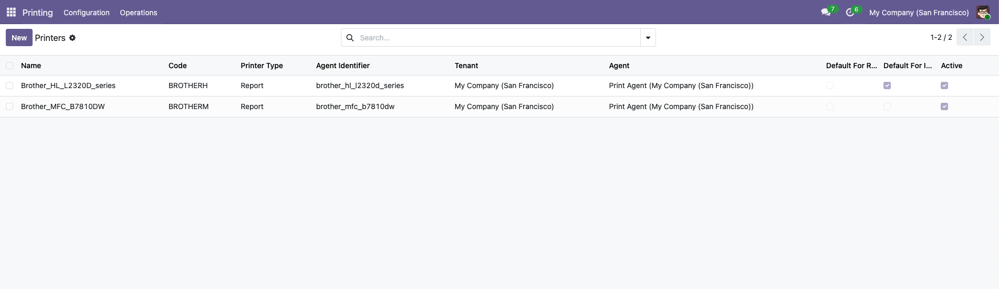
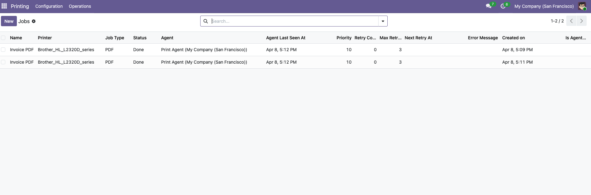
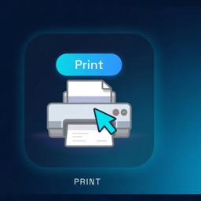
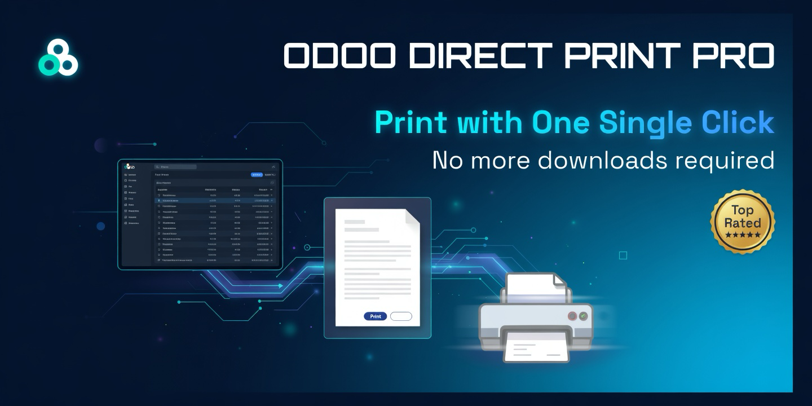

Screenshots
Examples of the setup wizard, printers, and job tracking screens.





Agent-based printing for POS receipts, invoices, and reports: Odoo queues print jobs and a lightweight local agent executes them on the printers that are actually connected to your workstation or LAN.
Built around a clean job lifecycle (lease / ack / done / fail) with job logs, retries, and per-company separation.

Print to USB or network printers from the workstation that has printer access — perfect for POS counters, kitchens, and warehouses.
Every print becomes a job with status tracking and logs inside Odoo (pending, assigned, printing, done, failed).
Use different printers for POS receipts vs invoices/reports, with tenant-aware defaults and explicit per-job selection.
A clean API contract makes it easy to ship a production-grade agent (Windows, Linux, macOS) with installers and auto-start.
Install the module in Odoo, generate a company API key, then install the local agent on the workstation that has access to the printers.
Download the agent binary and run the interactive installer (launches a local browser UI and sets up auto-start):
macOS (per-user): ./odoo-print-agent install
macOS (system): sudo ./odoo-print-agent install
Linux (systemd): sudo ./odoo-print-agent install
Windows: odoo-print-agent.exe installThe installer prints a local URL like http://127.0.0.1:PORT/. Open it, enter the Odoo URL + API key, select printers, and click Save.
Create a print job from POS or an invoice. Check job status transitions (pending → assigned/printing → done) and verify output at the printer.
Examples of the setup wizard, printers, and job tracking screens.



A POS receipt, invoice, or report is converted into a job payload and queued with a chosen printer.
The local agent polls the API using a company API key and leases available jobs for safe processing.
The agent prints locally to receipt/kitchen/label/report printers using OS drivers or direct protocols.
Jobs are marked done or failed with an error message and logs are stored in Odoo.
API key is wrong or was regenerated. Generate a new key in Printing Setup and update the agent configuration.
Agent is not running, cannot reach Odoo, or the Odoo URL is not reachable from the agent machine.
Printer mapping is incorrect (OS printer name mismatch), or the printer driver is not installed on the agent workstation.
Printers are keyed by agent_identifier. If identifiers change, Odoo will show additional printers. Keep identifiers stable per physical printer.
Designed to work with printers you already use:
Module: Print Master
Version: 19.0
License: LGPL-3
Author: LogicLayer